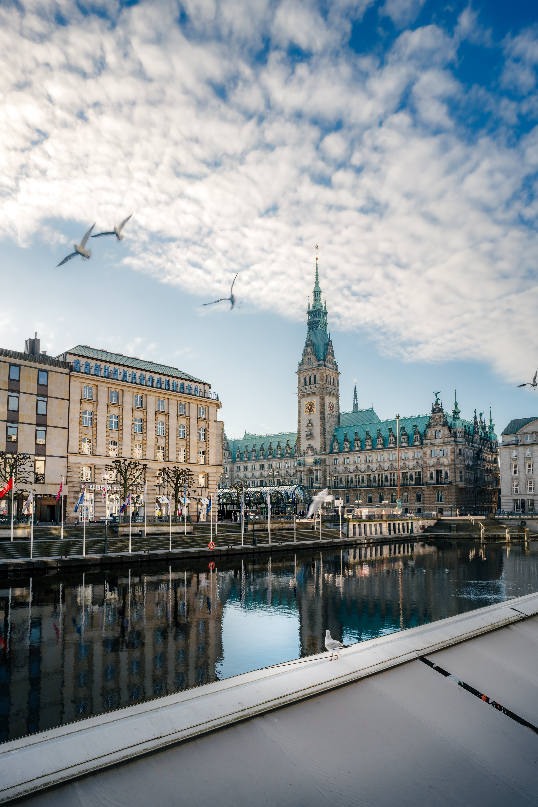

Traveling Around the World
Wrold can not explain how to feels to step into a new country. There is a rush as the plane leaves and lands. You are nervous, excited, anxious all at once. But seeing the beauty of a new country is all worth it. I have had the pleasure of trvaeling to multiple different countries and here are a few of my top ones! I hope you enjoy. Coming in at #1 is Italty. Every coner of this country is just stunning, from the street of Santorini, to the coast of Almafi. The food is amazing, and the sights are unreal. Just keep a look out for pick pocketers.
Oh where we'll go!
Coming in at a strong second if London! This city is known for fashion, culutre, and of course its food. Walking the streets will transport you into another era. Don't forget to stop at the Palce while you are there! My favorite part from this trip was seeing the guards at the queens palace, it is such a surell experience. When looking for a new place to travel to always weigh out the pros and cons of things to do! Will there be activies for the kids? A lot of walking? what type of tours do they offer? I like to have a list when looking for new palces, that way i know what im gettig myself into before i go! Below are a few links you can look at to help you deicde.